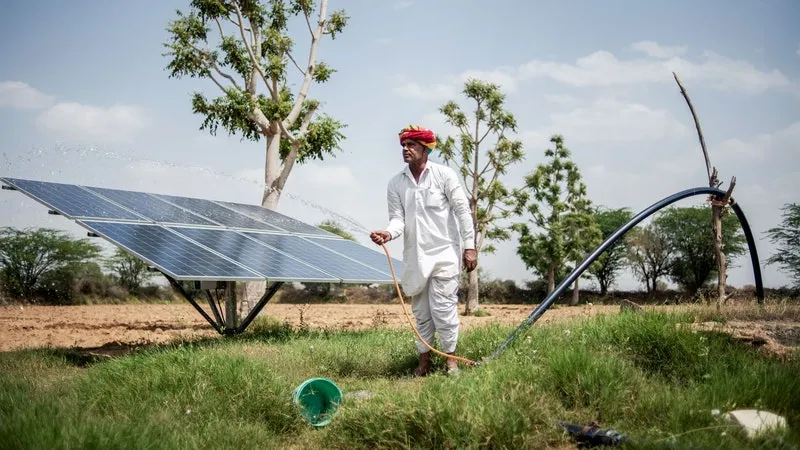
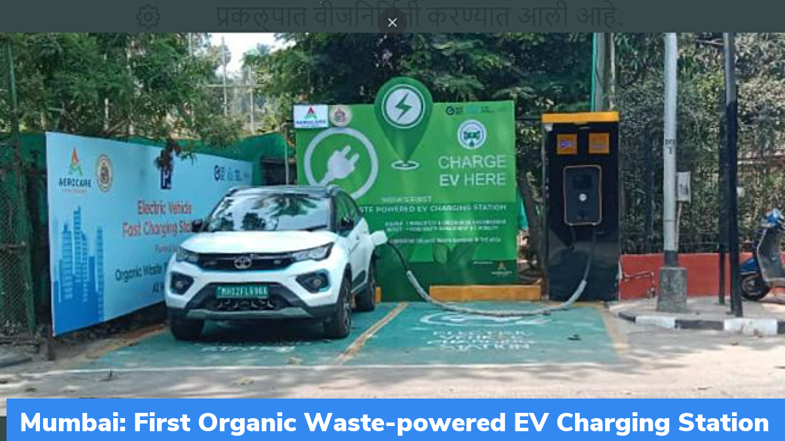
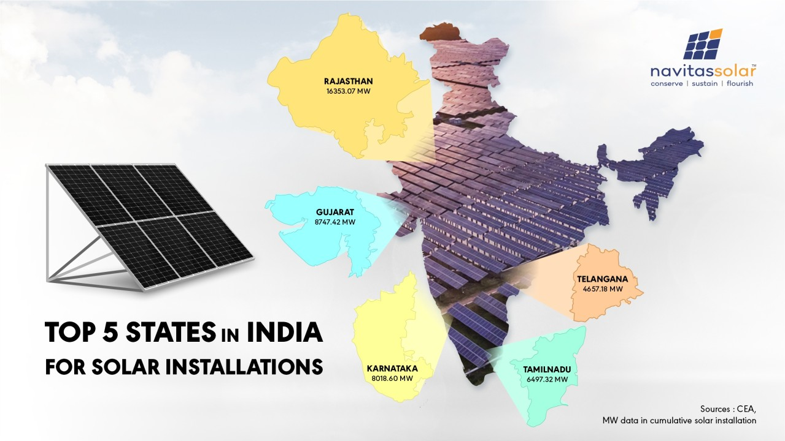

Welcome to our website about eco friendly fuels
What are ecofriendly fuels ?
Understanding eco friendly fuels
Eco-friendly fuels, also known as renewable fuels or alternative fuels, are types of fuel that are derived from renewable or sustainable sources and produce fewer greenhouse gas emissions compared to traditional fossil fuels like coal, oil, and natural gas. These fuels are considered eco-friendly because they contribute less to climate change and have lower environmental impacts.
- Biofuels: Made from renewable resources like plants and animal waste, releasing less carbon dioxide than fossil fuels
- Natural gas: Although a fossil fuel, it burns cleaner than options like coal, emitting less greenhouse gases
- Hydrogen: When produced from renewable energy sources like solar or wind, hydrogen fuel cells can generate electricity with only water vapor as a byproduct
Importance of eco fuels
- Reduced Greenhouse Gas Emissions:Eco fuels are derived from renewable resources such as plants, algae, or organic waste, which absorb carbon dioxide during their growth. When these fuels are burned, they release carbon dioxide, but the net emissions are much lower compared to fossil fuels because the carbon emitted was recently removed from the atmosphere during the feedstock's growth
- Energy Security:By diversifying energy sources away from finite fossil fuels, eco fuels contribute to energy security. Countries can reduce their dependence on imported oil and gas by investing in domestic biofuel production, thereby enhancing energy independence.
- Mitigation of Climate Change:Given their lower carbon footprint compared to fossil fuels, eco fuels are a valuable tool in mitigating climate change. They help reduce the overall concentration of greenhouse gases in the atmosphere, thereby slowing down the rate of global warming
- Waste Reduction and Recycling:Some eco fuels are produced from organic waste materials such as food scraps, agricultural residues, and municipal solid waste. By converting these wastes into valuable energy sources, eco fuels contribute to waste reduction, landfill diversion, and resource recycling
Mostly used Eco friendly fuels
Several eco-friendly fuels are commonly used across various sectors. Some of the most prevalent ones include:
These eco-friendly fuels offer viable alternatives to conventional fossil fuels, helping to reduce greenhouse gas emissions, enhance energy security, and promote sustainable development. Their adoption is key to transitioning towards a more sustainable and resilient energy future
- Biodiesel: Biodiesel is a renewable fuel made from vegetable oils, animal fats, or recycled restaurant greases. It can be blended with petroleum diesel or used as a pure fuel in diesel engines, reducing greenhouse gas emissions and air pollutants.
- Ethanol:Ethanol is a biofuel produced from crops such as corn, sugarcane, or wheat, as well as cellulosic biomass. It is commonly blended with gasoline to create ethanol-gasoline blends such as E10 (10% ethanol, 90% gasoline) or E85 (85% ethanol, 15% gasoline).
- Biogas: Biogas is produced through the anaerobic digestion of organic materials such as agricultural residues, animal manure, sewage sludge, and food waste. It primarily consists of methane and carbon dioxide and can be used as a renewable fuel for heating, electricity generation, or vehicle fuel.
- Hydrogen: Hydrogen can be produced through electrolysis using renewable electricity or from biomass gasification. It is a versatile eco-friendly fuel that can be used in fuel cells to produce electricity for various applications, including transportation and stationary power generation, emitting only water vapor as a byproduct
- Solar Energy: Solar energy is harnessed from the sun using photovoltaic cells or solar thermal collectors. It is a clean and abundant source of renewable energy used for electricity generation, heating water, and space heating/cooling in residential, commercial, and industrial settings
- Wind Energy: Wind energy is generated by harnessing the kinetic energy of wind through wind turbines. It is a widely adopted renewable energy source for electricity generation, with both onshore and offshore wind farms contributing to the global energy mix.
Gurugram
- Compressed Natural Gas (CNG): CNG is already widely used as a cleaner alternative to traditional gasoline and diesel fuels in vehicles. In Gurugram, there are CNG stations available for vehicles to refuel, and many public transportation systems, such as buses and auto-rickshaws, run on CNG.
- Electric Vehicles (EVs): Electric vehicles are becoming increasingly popular worldwide, including in urban areas like Gurugram. EVs produce zero tailpipe emissions, helping to improve air quality. As the infrastructure for charging stations continues to develop, more residents in Gurugram may choose to drive electric cars or use electric scooters for their transportation needs.
- Hydrogen Fuel Cell Vehicles:Although still in the early stages of development and adoption, hydrogen fuel cell vehicles offer another eco-friendly alternative for transportation. Gurugram could invest in hydrogen refueling infrastructure to support the use of these vehicles in the future.
- Biofuels:: Gurugram could explore the use of biofuels, such as biodiesel or ethanol, in transportation. Biofuels can be produced from organic waste or dedicated energy crops and can help reduce greenhouse gas emissions compared to fossil fuels.
- Public Transportation: Improving and expanding public transportation options, such as buses and metro trains, can help reduce the reliance on individual vehicles powered by fossil fuels. Gurugram could invest in expanding its public transportation network and transitioning existing fleets to run on cleaner fuels like CNG or electricity.

Agra
In Agra, similar to other cities in India, efforts to adopt eco-friendly fuels are underway to address air pollution and promote sustainable development. Some of the eco-friendly fuels that could be used or promoted in Agra include:
- Pedal Power:Encouraging cycling as a mode of transportation can reduce reliance on motor vehicles and promote physical activity. Agra could invest in bicycle infrastructure, such as dedicated lanes and bike-sharing programs, to make cycling safer and more convenient for residents.
- Electric Vehicles (EVs):Electric vehicles offer a zero-emission alternative for transportation. Agra could encourage the adoption of electric cars, electric scooters, and e-rickshaws by providing incentives, developing charging infrastructure, and promoting public awareness.
- Compressed Natural Gas (CNG):CNG is widely used in urban areas across India, including Agra, as a cleaner alternative to traditional gasoline and diesel fuels. Many vehicles, especially public transportation such as buses and auto-rickshaws, run on CNG in Agra.
Q1. Why is it advised that industries should switch over to cleaner fuels such as CNG and LPG in the Taj Mahal Zone in Agra?
Ans. It is advised that industries around the Taj Mahal should switch over to cleaner fuels such as CNG and LPG because pollutants in the air are discoloring the white marble of the Taj Mahal.
This discoloration is known as marble cancer. Sulphur dioxide and nitrogen dioxide gases being released by industries are causing acid rains. Acid rain dissolves the marble of the Taj Mahal.
If the beauty of the Taj Mahal fades, it would be a cause for concern on a national scale.
CNG and LPG are eco-friendly and cause no harm to the environment.
Q2. How many electric vehicle charging stations in the agra?
Ans. There are 30 EV charging stations in Agra to charge your electric car
Patna
- Pedal Power:Encouraging cycling as a mode of transportation can reduce reliance on motor vehicles and promote physical activity. Agra could invest in bicycle infrastructure, such as dedicated lanes and bike-sharing programs, to make cycling safer and more convenient for residents.
- Electric Vehicles (EVs):Electric vehicles offer a zero-emission alternative for transportation. Agra could encourage the adoption of electric cars, electric scooters, and e-rickshaws by providing incentives, developing charging infrastructure, and promoting public awareness.
- Compressed Natural Gas (CNG):CNG is widely used in urban areas across India, including Agra, as a cleaner alternative to traditional gasoline and diesel fuels. Many vehicles, especially public transportation such as buses and auto-rickshaws, run on CNG in Patna.
Q1. How many electric vehicle charging stations in the patna?
Ans. There are 20 EV charging stations in Agra to charge your electric car
Common Question
Q1. First electric vehicle charging station in india.
Ans. India's first organic waste-powered EV charging station is located at Keshavrao Khadye road near Haji Ali in Mumbai, and was inaugurated in May 2022. The station generates 220 units of electricity from food waste collected from nearby areas, such as hotels and offices. This energy plant also powers street lights and charges electric vehicles.

Q2. Which state produces large solar energy in india
Ans. Rajasthan has the highest solar power generation potential of any state in the country. The state recently surpassed Karnataka as the leading state in solar installations. As of August 2023 Rajasthan's operational solar power projects produced roughly 17.8 GW of solar energy.

Q3. Total number of ev charging stations in india.
Ans. As of February 2024, India has 12,146 public electric vehicle (EV) charging stations across the country. Maharashtra has the most stations with 3,079, followed by Delhi with 1,886, and Karnataka with 1,041. Tripura has the fewest stations with one.
Q4. Which country has largest no of EV stations in the world ?
Ans. China has the largest number of publicly available electric vehicle (EV) charging stations in the world, with nearly 1.8 million in 2022. This is almost two thirds of the world's public charging infrastructure.